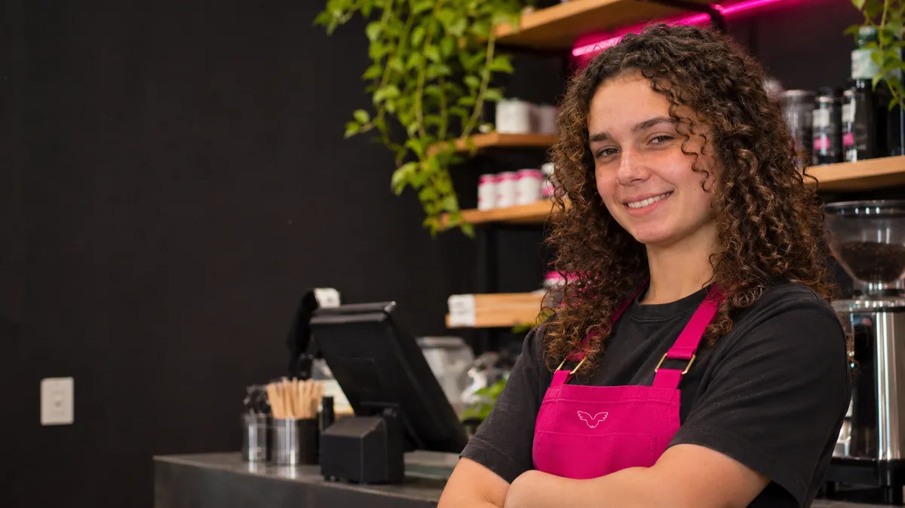

Processos fragmentados
Etapas que não conversam entre si e dependem de informação repetida.

Sobre a SIDAD
A SIDAD organiza automação e serviços para estabelecimentos comerciais que precisam de clareza, previsibilidade e acompanhamento.
Diagnóstico antes da proposta.

Quem somos
A SIDAD atua na interseção entre automação e prestação de serviços para estabelecimentos comerciais.
O trabalho começa pelo entendimento da rotina real. Antes de propor uma ferramenta, a SIDAD observa como o estabelecimento opera, o que se repete e o que precisa de uma solução mais clara.
A automação entra como meio, não como fim. A prestação de serviços complementa a operação quando a execução precisa de padrão, acompanhamento e continuidade.
O que buscamos resolver
Problemas de operação raramente começam na ferramenta. Começam no processo, na falta de critério e no excesso de controle manual.
Etapas que não conversam entre si e dependem de informação repetida.
Quando a operação só funciona porque alguém lembra de cada passo.
Sem uma rotina definida, cada dia funciona de uma forma.
Tarefas e informações se repetem porque o processo não está organizado.
Como ajudamos
Cada projeto é definido a partir do contexto do estabelecimento. O objetivo é organizar a operação, não adicionar complexidade.
Mapeamos a rotina atual, identificamos repetições e definimos prioridades.
Delimitamos o que será automatizado, o que continua humano e como a implantação será feita.
A solução é colocada em prática com acompanhamento e ajustes conforme a operação.
Verificamos se a rotina ganhou clareza e se o processo faz sentido no dia a dia.
Propósito, visão e diferenciais
A visão da SIDAD é usar automação e serviços para dar clareza à operação. O critério é sempre a rotina real do estabelecimento.